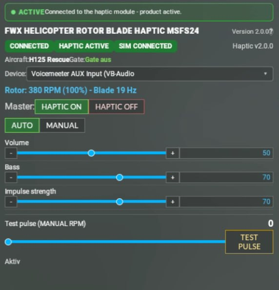

FWX Helicopter Rotor Blade Haptic.
for Microsoft Flight Simulator 2024
Feel every blade in your seat. Ordinary haptics send one steady vibration, and that feels like a washing machine. In a real helicopter you feel every single blade pass, and every type has its own rhythm.
From the makers of the FWX EC135 Sound Mod, reviewed by SimFlight, Threshold and MSFS Addons.
What it does
The rotor reaches you through your seat or your controls. Winding up, hovering and hard manoeuvres each feel different, so you notice what the helicopter is doing without taking your eyes off the horizon.
A steady hum tells you nothing. A blade rhythm does. On start-up the beats are slow enough to count along, one by one. At full rotor speed they run together into a deep, even bass. Everything that makes a helicopter feel like a helicopter happens between those two points, and you feel all of it.
It works next to the FWX EC135 Sound Mod without getting in its way, and it makes no changes to the aircraft files.
What you feel
- Single blade beats on start-up. Slow enough to count along, one by one.
- The uneven clatter of drooping blades. At medium rotor speed, exactly where a real rotor is at its most restless.
- A continuous, steady bass at full rotor speed. The rotor is up, and you can feel that it is up.
- A rotor brake with a run-down you can feel. Shutting down stops being a silent moment.
- Hovering and hard manoeuvres feel different from each other. The information arrives through your body, not through another gauge to read.
- Only your shaker feels it. The cockpit audio stays on your headset while the pulses go to the device alone.
Every helicopter, its own rhythm
A two-bladed machine beats twice per turn, a six-bladed one six times. That difference is what makes each type feel like itself, and it is the reason one single vibration can never be right.
- Works with any helicopter. Turbine or piston, light single or heavy twin - every helicopter in the simulator is covered, piston-engined types such as the Guimbal Cabri G2 included.
- Set up for your helicopter. On the common types everything is preset, so the rhythm belongs to the machine you are flying.
- Everything else starts on a sensible default. No helicopter is left out. If it does not match your machine, you can adjust it in the panel with one click.
- Nothing to set up before the first flight. Connect the device, choose the output it should go to, fly.
- What you set is kept. Your second flight starts where the first one ended.
Using the panel
You set everything inside the simulator. The FWX Control Center is a panel in the simulator itself: you open it from the toolbar in mid-flight, set what you want, and close it again. There is no window outside the simulator you have to operate or keep running - nothing to alt-tab to just to change a setting.
The panel has one page per FWX add-on - Flight Realism, Rotor Shadow, Haptic, Sound Pack - plus a News page with our current notes. The master switch sits at the top, everything belonging to that page below it. Every change takes effect at once, without a restart.
The Haptic page holds everything you need for this add-on:
- Master switch. Haptics on or off, in mid-flight.
- The device list. This is where you choose which output the pulses are sent to - your shaker. Click a device in the list and it is used right away. Your headset is not affected.
- Three sliders: volume, bass and pulse strength. Each from 0 to 100. That is how you set how hard and how deep the rotor arrives at you - to your taste and to the device you own.
- Automatic or manual. Leave it on automatic, or switch to manual if you ever is not, you switch to manual and set it yourself.
- A test pulse. One button that fires a single beat, so you can check on the ground that your device is wired up properly without having to take off first.
- A readout of what the rotor is doing. You can see in the panel that what you feel matches the machine.
- Detected helicopter and connection state sit next to it as a short line - no guessing whether it is running.

Everything you set here is kept. The second flight starts where the first one left off.
What it does not do
- Without a bass shaker or tactile transducer there is nothing to feel.
- No sound comes out of your speakers, only vibration into the device.
- It changes nothing about the flight behaviour and nothing about the visuals.
Compatibility
- Microsoft Flight Simulator 2024. PC, Steam or Microsoft Store. MSFS 2020 is not supported.
- Windows 11. Not available on Xbox, which cannot install third-party add-ons.
- A bass shaker, tactile transducer or ButtKicker, connected to a separate audio output.
- Every helicopter in the simulator, turbine or piston. Not limited to the EC135, and not limited to four-bladed rotors.
- Runs next to the FWX EC135 Sound Mod without getting in its way.
Where to get it
Rotor Blade Haptic is part of the FWX add-on line for Microsoft Flight Simulator 2024. You will find it, and everything else we make, on our SimMarket page, where it is listed under its full product name, FWX HELICOPTER ROTOR BLADE HAPTIC MSFS24.
Something still unclear?
Email Finn.West@gmx.net and I will answer personally. Usually under 24 hours.
Contact & support →